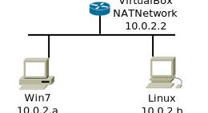

Networking
VM-setup Worksheet
Setting up Virtual Machines
In this worksheet you will set up two Virtual Machines, and check out communications between them and their Internet gateway using Wireshark. Each machine will have a simple user account, called "user" and with password "user" so that nobody forgets their account or password. Some terminology:
- The actual computer that you're using is called the physical host.
- It will run a program called a virtual machine manager (VM manager); we will be using the VirtualBox VM manager. The VM manager provides the Internet gateway.
- Within it, you will configure and run a number of virtual machines, each one running an operating system (such as Windows 7 or Linux).
Set up and Start the VirtualBox VM Manager
- Open a terminal on your physical host.
-
Run the
ifconfigcommand. Note your IP (inet) address and MAC (HWaddr or ether) address for later reference. It should look like 148.137.141.??? where the "???" varies from host to host. -
If you haven't already, use the
mountmadhomecommand to mount your "M:" drive as the "MadHome" directory in your home directory. You will need about 20GB free on your "MadHome" drive. -
Run the command
virtualboxfrom the command line, or find the link from the start menu. - Click on "File → Preferences → General".
- Set the Default Machine Folder to be a folder in MadHome. You should create a folder to hold VMs (and other files) for this course.
Windows VM
- Click on "New" from the VM manager window. Name this machine "Win7-<number>", where "<number>" is the last number of your physical host's IP address (e.g. 106 or 118). Set the "Type" and "Version" as Windows 7 (use 64-bit), and click on "Next >".
-
Leave the Memory at 1024 MB (1 GB), and click on "Next".
Check "Create a virtual hard drive now", and click on "Create".
Check "VDI (VirtualBox Disk Image)", and click on "Next".
Check "Dynamically allocated", and click on "Next".
Set the virtual hard drive size to about 12 GB, and click on "Create".
-
Select your new VM in the VM manager, and click on "Start".
If you get the "Select start-up disk" dialog box, do the following:
- Click on the folder-like icon ("browse").
- Choose File System; double-click "/iso-files".
- Double-click the "Win_Pro_7_64bit.iso" file.
- Then click on "Start".
If you DON'T get the "Select start-up disk" dialog box, power off the VM again and do the following:
- Click on the "Settings" menu (looks like an orange gear).
- Choose Storage on the left.
- Click on the "Empty" item in the Storage tree on the right.
- On the far right, click on the circular icon (bluish, looks kind of like a CD or DVD).
- Click on "Choose virtual optical disk file..."
- Browse to "Computer &rarrow; / &rarrow; /iso-files".
- Double-click (or Open) the "Win_Pro_7_64bit.iso" file.
- Click on OK.
- Then click on "Start".
- Let the installation run. Accept the license agreements. Choose a custom installation.
-
Let Windows restart.
Create a user named "user", with password "user" (the machine name is acceptable).
The easiest password hint is to simply enter "user" again.
Select "Ask me later" for the security settings.
Select "Eastern Time" for the time and date settings.
- (Important:) Select "Work network" for the current location.
- When it's done, restart your new Windows VM. Login to Windows, using account "user" and password "user".
- If the "current location" window opens again, select "Work network" again.
-
Click on "Start -> All Programs -> Accessories".
Right-click on "Command Prompt" and choose "Run as Administrator".
Run the command
ipconfig. What is the IP address? (How does it compare to your physical host's IP address?) -
Run the command
ping 4.2.2.2to determine whether you're connected to the Internet. (You should be.)
-
Open a web browser (Internet Explorer).
Browse to "filezilla-project.org".
Download and install the FTP server.
-
Click on the "Devices" menu (above the Windows screen).
Choose "Optical Drives".
Click on "Remove disk from virtual drive".
-
Click on the "Devices" menu (above the Windows screen) again.
Choose "Guest Additions CD image".
-
If the CD doesn't autostart, then...
- Click the Windows Start button in the VM, and enter the command "computer".
- Double-click the "CD drive (D:) VirtualBox Guest Additions".
- Run the "VBoxWindowsAdditions.exe" application. Accept the defaults.
-
Restart Windows.
You should now be able to use "Menu -> Control Panel -> Display" to resize the window to be larger — try 1024x768 or 1280x1024.
Alternatively, you may be able to just drag and drop the corner of the window to resize it.
- Click on "New" from the VM manager window. Name this machine "Linux-<number>", where "<number>" is the last number of your IP address (e.g. 106 or 118). Set the "Type" and "Version" appropriately (use 64-bit), and click on "Next >".
-
Leave the Memory at 1024 MB (1 GB), and click on "Next".
Check "Create a virtual hard drive now", and click on "Create".
Check "VDI (VirtualBox Disk Image)", and click on "Next".
Check "Dynamically allocated", and click on "Next".
Set the virtual hard drive size to about 8 GB, and click on "Create".
-
Select your new VM in the VM manager, and click on "Start".
You should get the "Select start-up disk" dialog box. Click on the folder-like icon ("browse"). Choose File System; double-click "iso-files". Double-click any one of the Linux .iso files. (If unsure, try Ubuntu.) Double-click the Linux Ubuntu .iso file. Then click on "Start".
- Let the installation run. Choose appropriate values. If the installation asks for a root password (Fedora installation), use "user".
-
Let Linux restart.
Create a user named "user", with password "user" (the machine name is acceptable).
Select "Eastern Time" for the time and date settings.
- When it's done, restart your new Linux VM. Login, using account "user" and password "user".
-
Find and run the terminal program (search for "term" from the Start menu).
Run the command
ifconfig. What is the IP address? (Does it start out "148.137..." or with "10.0.2..."?) -
Run the command
ping -c 3 4.2.2.2to determine whether you're connected to the Internet. (You should be.) -
Run the command:
sudo apt install wireshark
-
If you instead installed Fedora, run the commands:
su yum install wireshark yum install wireshark-gnome usermod -a -G wireshark user yum install ftp
- Start your Linux VM.
- Open a terminal in Linux.
-
Run the command
virtualboxfrom the command line, or find the link from the start menu. -
Obtain the scapy package: run the command
wget https://github.com/secdev/scapy/archive/v2.3.2.zip
-
Unpack and install the package.
Enter these commands, one at a time:
unzip v2.3.2.zip cd scapy-2.3.2/ sudo python setup.py install
-
Obtain the scapy package: run the command
wget https://github.com/phaethon/scapy/archive/master.zip -
Unpack and install the package.
Enter these commands, one at a time:
unzip master.zip cd scapy-master/ sudo python3 setup.py install
-
Click on the "Devices" menu (above the Windows screen).
Choose "Optical Drives".
Click on "Remove disk from virtual drive". (If it's grayed out so you can't click on it, just skip to the next step.)
-
Click on the "Devices" menu (above the Linux screen) again.
Choose "Guest Additions CD image".
- You should be prompted to run the executable on the Guest Additions CD. Go ahead and do so.
- If you aren't prompted to run the Guest Additions CD, open a file manager (for example, Dolphin on Ubuntu), browse to the Guest Additions CD, and double-click the "autorun.sh" file.
-
Restart Linux.
You should now be able to use "Settings &rarrow; Display" to resize the window to be larger — try 1024x768 or 1280x1024.
Alternatively, you may be able to just drag and drop the corner of the window to resize it.
- If necessary, restart both of your VMs.
-
In Windows, run the command
ipconfigfrom a command prompt and verify an IP address for the VM. -
In Linux, run the command
ifconfig(or the commandip addr) from a terminal and verify another IP address for this VM. -
In Linux, start Wireshark:
-
In Ubuntu, use a terminal to run the command
sudo wireshark - In Fedora, find the "Wireshark" command in the Applications menu and run that.
-
In Ubuntu, use a terminal to run the command
-
Use a new terminal in your Linux VM to run the command
ping -c 3 10.0.2.2again. You should see the ping traffic in Wireshark. -
Run the command
ping -c 3 4.2.2.2again. You should see the ping traffic in Wireshark. - From Windows, ping the address 10.0.2.2. Do you see the ping traffic in Wireshark?
- From Windows, ping the address 4.2.2.2. Do you see the ping traffic in Wireshark?
- Shut down Wireshark.
Make your VM resize-able
Linux VM
Install Wireshark in Linux
Wireshark is a packet-analysis application, also known as a "packet sniffer". Install Wireshark into your VM.Set up the scapy package in Linux
Scapy is a network-packet-manipulation package that runs under Python 2.5 or later. You will install scapy in your Linux VM, which should have Python installed by default.Scapy is available for python 2.x and for python 3.x, but you have to choose which language version you prefer. If you prefer python 2.x, use the first sequence below. If you prefer python 3.x instead, use the second sequence below.
Python 2.x
(note: You should be able to install scapy on a Windows machine running Python 2.5 or later, as well.)
Python 3.x